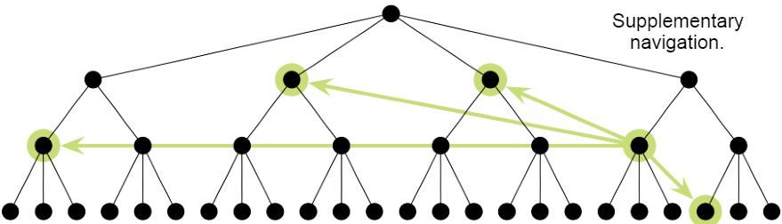
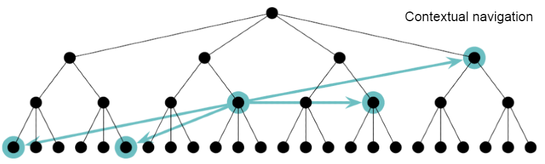

Beskriv vad global respektive lokal navigering är. Ta upp likheter och skillnader.
Global navigering är den övergripande menyn som man använder sig av för att hitta runt på sidan. Startsidan ska alltid finnas med på den, så att man alltid kan hitta tillbaka.
Lokal navigeringen är för att hitta mer information i underområden om ett ämne eller en länk.
Startsidan behöver inte finnas med på den loka navigeringen, så länge man kan fortfarande se den globala navigeringen.
Beskriv vad supplementary respektive courtesy navigering är. Ta upp likheter och skillnader.
Supplementary navigation
Skapar genvägar/länkar till releterat innehåll, som inte nödvändigtvis finns lätt åtkompligt via den globala eller lokala navigeringen.
Som exmpel, en länk som denna. Länk till Alternativa Transform
Contextual navigation
Är länkar som finns i texten man läser. Kan vara att mitt i texten så vill man hänvisa till en annan del av sidan eller någon annan sida. Utan att anävdaren ska behöver skanna av sidan för att hitta rätt.
Länka till någon valfri webbsida (dock ej den som används i föreläsningens exempel) och ange var på sidan man kan hitta ovanstående fyra typer av navigering.
Om du inte hittar alla fyra typer av navigering på samma sida, kan du länka till flera sidor.
https://www.migrationsverket.se
- Global navigation
- Högst upp på sidan
- Local navigation
- Efter val på någon av länkarna på den globla, kommer lokala upp till vänster
- Supplementary navigation
- Under "Populära sidor och tjänster" som finns på alla sidor (förutom start sidan)
- Contextual navigation
- I stort sett på alla sidor som har information, finns exmpel på länkar i texen till andra delar av sidan.